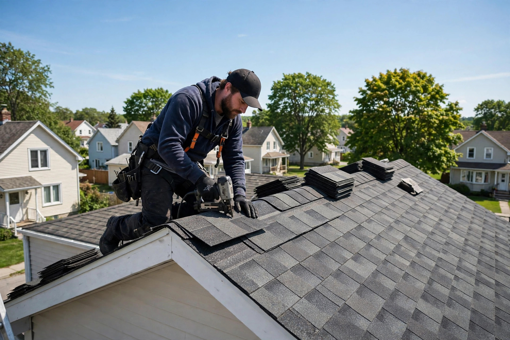
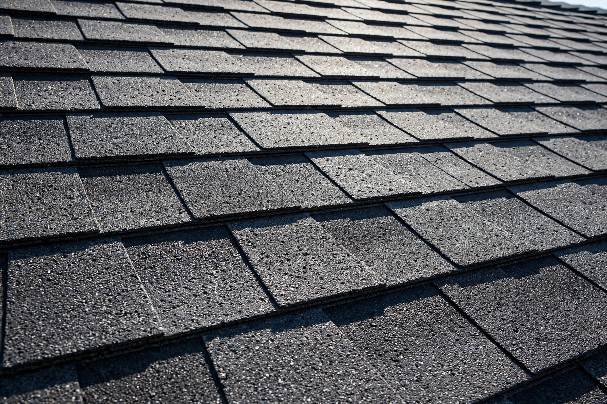

Bardeaux d'asphalte
Pose, remplacement et finition soignée de bardeaux d'asphalte — le classique qui dure.

Laval, QC · Couvreurs · Service 24 h / 24, 7 j / 7
Bardeaux d'asphalte, toit plat, TPO, rénovation et réparation de toit — résidentiel et commercial. Et quand ça fuit, on répond : urgence toit, 24 h sur 24, 7 jours sur 7.
Urgence toit
Réparation d'urgence de toit, 24 h / 24, 7 j / 7. Un appel et on se déplace à Laval.
Ce que nous faisons
Pose, remplacement et finition soignée de bardeaux d'asphalte — le classique qui dure.
Toitures complètes sur maisons neuves et rénovations complètes de toitures vieillissantes.
Infiltrations, bardeaux manquants ou endommagés — on localise la fuite et on répare.
Tempête, branche tombée, dégât d'eau : intervention d'urgence jour et nuit, 7 jours sur 7.
Toits plats et membranes TPO pour le résidentiel et le commercial — étanchéité durable.
Réparation de cheminées, ventilation et isolation d'entre-toit — un toit sain de haut en bas.

Pourquoi nous choisir
Un toit, ça protège tout ce qui est en dessous. On travaille proprement, on explique ce qu'on fait et on répond quand vous avez besoin de nous — même à 3 h du matin.
Nos chantiers


Contact direct
Bon à savoir
Oui. Pour une réparation d'urgence de toit — infiltration, dégât de tempête, branche tombée — appelez le 438 878-1321 à n'importe quelle heure, on se déplace.
Oui — maisons, immeubles résidentiels et bâtiments commerciaux, à Laval et les environs.
Bardeaux d'asphalte, toits plats et membranes TPO — en rénovation comme sur les toitures de maisons neuves.
Oui — ventilation et isolation d'entre-toit, ainsi que la réparation de cheminées. Un toit sain, de haut en bas.
Appelez-nous